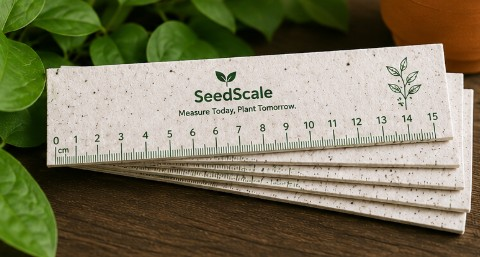
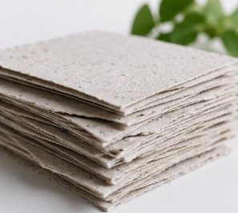
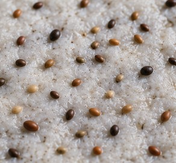
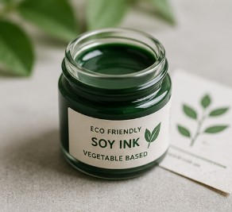
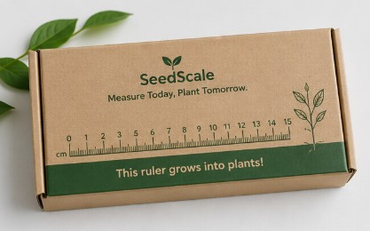

SeedScale is made using recycled paper, organic seeds and eco-friendly materials. It replaces plastic stationery with a biodegradable product that can grow into plants after use.


Biodegradable paper pulp used as the main body of SeedScale.

Natural seeds embedded inside the scale that grow after planting.

Natural printing ink used for measurement markings.

Plastic-free packaging material for product protection.
| Material | Description | Purpose |
|---|---|---|
| 📄 Recycled Paper | Biodegradable paper pulp | Main body of scale |
| 🌱 Organic Seeds | Natural plant seeds | Grow plants after use |
| 🎨 Eco Ink | Natural printing ink | Print measurements |
| 📦 Kraft Paper | Plastic-free packaging | Product protection |
Paper Preparation
Seed Embedding
Eco Printing
Scale Cutting
Packaging
SeedScale replaces plastic rulers with a biodegradable alternative. After use, it can be planted in soil to grow herbs, flowers and vegetables, creating zero waste.